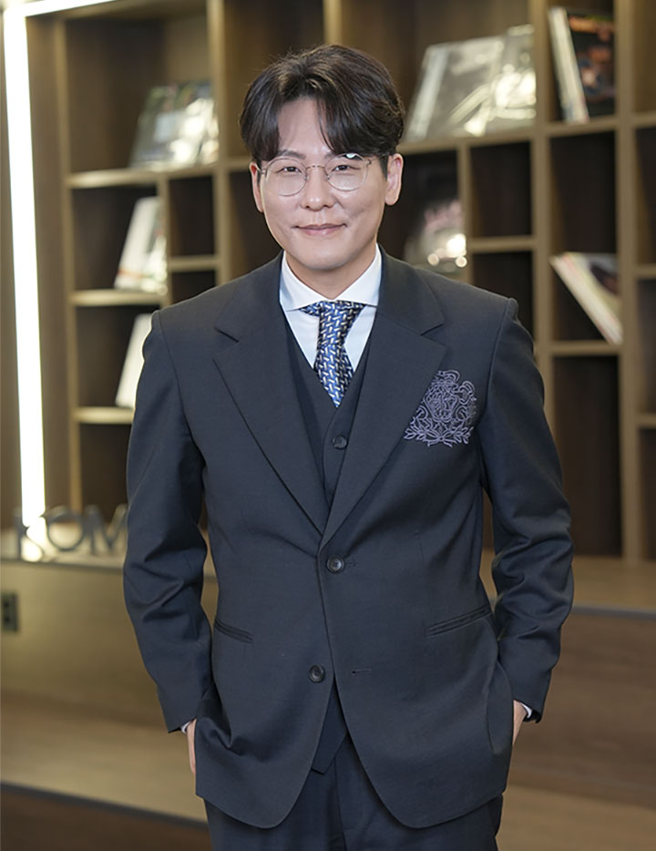
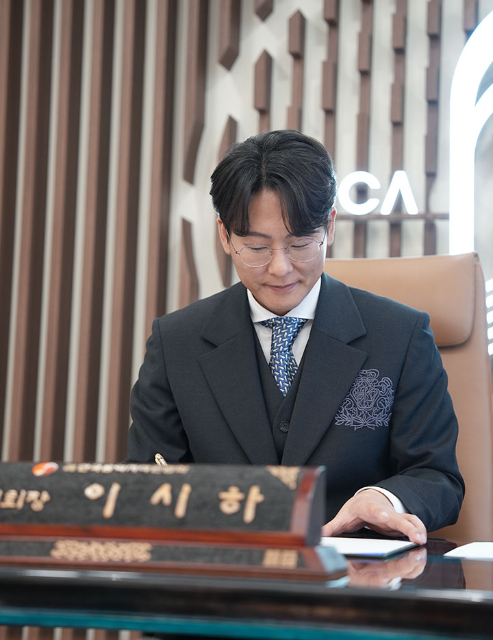

저작권 시장의 외형적 성장만큼이나 내실 있는 분배 시스템에 대한 창작자들의 요구가 높아지고 있다. ‘창작자가 주인인 협회’를 내걸고 취임한 한국음악저작권협회 제25대 이시하 회장이 데이터 기반의 정교한 분배와 투명한 경영을 통해 협회의 신뢰를 어떻게 재정립해 나갈지 그 행보가 주목된다.
한국음악저작권협회 개혁의 출발점은 신뢰 회복 ‘창작자가 주인인 협회’ 만들어갈 것

이시하 회장은 선거 결과를 한국음악저작권협회(이하 협회)의
개혁을 바라는 회원들의 의지가 반영된 것으로 해석했다. 그는
무엇보다 협회의 신뢰를 회복하는 일이 새 집행부의 가장 중요한
책임이라고 강조했다. 운영이 투명하게 이루어지고 회원의 신뢰가
회복될 때 비로소 협회의 역할도 제대로 작동할 수 있기 때문이다.
결국 개혁은 제도나 규정의 문제를 넘어 회원이 신뢰할 수 있는
운영 구조를 만드는 데서 출발한다.
“외부 기관의 제도적 장치에 의존하기보다 협회 스스로 약속한
공약을 실제로 실행하는 것이 중요하다고 생각합니다. 이를 위해
공약 이행 과정을 투명하게 공개하고, 이행위원회를 통해
지속적으로 점검할 계획입니다. 또한 누리집 등을 통해 진행
상황을 공개해 회원들이 직접 확인할 수 있도록 하겠습니다.”
이시하 회장이 강조하는 원칙은 ‘창작자가 주인인 협회’다. 협회는
창작자의 권익을 위해 존재하는 조직이기 때문이다. 그는 협회의
운영 방향을 회원 중심으로 재정립하겠다는 구상을 밝혔다. 이를
위해 창작자들이 현장에서 느끼는 불편과 의견이 협회 운영에 보다
신속하게 반영될 수 있는 구조를 만드는 것이 무엇보다 중요하다고
설명했다.
“그동안 협회와 회원 사이에는 여러 단계의 행정 절차가 있어
현장의 목소리가 정책과 제도에 반영되기까지 시간이 걸리는
경우가 많았습니다. 이러한 구조적 한계를 개선해 창작자들의
의견이 보다 직접적으로 전달되고 반영될 수 있는 체계를 마련할
계획입니다. 협회가 행정 중심 조직을 넘어 창작자의 목소리를
적극 반영하는 조직으로 자리 잡는다면 회원과 협회 간의 신뢰
역시 더욱 공고해질 것으로 생각합니다.”
저작권 사용료 징수 규모가 꾸준히 확대되고 있음에도 창작자들이
체감하는 삶의 수준은 여전히 선진국과 상당한 격차가 있다. 저작권
시장의 규모는 확대됐지만 그에 상응하는 질적 성장은 뒤따르지
못했다는 평가도 제기된다. 중요한 것은 징수 규모의 확대가 아니라
그 성과가 창작자의 실제 소득 증가와 권익 향상으로 이어지는
구조를 만드는 일이다. 저작권 제도가 창작자의 삶을 실질적으로
뒷받침하기 위해서는 저작권 사용료의 징수와 분배 시스템 역시
공정하고 투명하게 작동해야 한다.
저작권 사용료의 분배 공정성, AI 기반 분배시스템 고도화 필요
이시하 회장은 저작권 사용료 분배의 공정성을 중요한 과제로
제시했다. 현재 저작권 사용료 분배는 각종 플랫폼에서 제공하는
이용 데이터를 기반으로 이루어지고 있다. 그러나 이러한 데이터가
실제 음악 이용 상황을 얼마나 정확하게 반영하고 있는지에 대해서는
지속적인 점검이 필요하다. 특히 스트리밍 서비스와 온라인 플랫폼이
음악 소비의 중심이 된 이후 이용 데이터의 규모와 구조는 더욱
복잡해지고 있다. 이 과정에서 일부 이용 패턴이 실제 음악 소비와
괴리를 보이거나, 잘 알려지지 않은 곡에 예상보다 큰 분배 금액이
발생하는 사례도 확인되고 있다. 이는 결국 분배 시스템의 신뢰와도
직결되는 문제다.
“음악 산업 환경이 빠르게 변화하는 만큼 협회의 분배 시스템 역시
그 변화에 맞게 더욱 정교하게 고도화할 필요가 있습니다. 특히
창작자가 자신의 저작권 수입이 어떤 기준과 과정을 통해
산출됐는지를 확인할 수 있는 구조를 만드는 것이 중요합니다.
예를 들어 특정 곡이 어떤 플랫폼에서 얼마나 재생됐는지, 어느
지역에서 몇 차례 이용됐는지와 같은 기록을 확인할 수 있는
시스템이 마련된다면 창작자들도 분배 결과를 보다 쉽게 이해하고
납득할 수 있을 것입니다.”
이시하 회장은 이러한 문제를 해결하기 위한 방안으로
인공지능(AI) 기술을 활용한 징수·분배 시스템의 고도화를 제시했다.
AI를 통해 음악 이용 데이터를 보다 정밀하게 분석하고 징수와 분배
과정의 투명성을 높이겠다는 구상이다. 또한 음악 산업이 글로벌
플랫폼을 중심으로 재편되고 있는 만큼 해외 시장에서 발생하는
사용료를 보다 적극적으로 확보하는 노력 역시 필요하다. 해외에서
발생하는 사용료를 체계적으로 관리하고 징수할 수 있는 시스템을
강화하는 것 또한 중요한 과제다.
“AI 기술을 제도권 안으로 빠르게 받아들이되, 그 과정에서
창작자의 권리와 저작권을 지켜낼 수 있는 기준을 먼저 마련하는
것이 중요하다고 생각합니다.”
저작권은 창작자의 생명줄, 창작자의 삶을 지탱하게 하는 저작권의 가치
음악의 출발점과 도착점은 사람이다. 음악은 창작자의 삶과 감정이
고스란히 담긴 결과물이기 때문이다. 음악을 통해 위로를 받았던
개인적인 경험은 그가 음악의 길을 선택하게 된 계기가 됐다. 동시에
누군가에게 같은 위로를 전하는 음악을 만들고 싶다는 목표로
이어졌다. 결국 음악을 하는 이유도, 음악을 듣는 이유도 사람에게
위로와 메시지를 전하기 위해서라는 것이 그의 생각이다.
저작권 역시 음악의 중심에 사람이 있다는 같은 맥락에서 이해할 수
있다. 저작권은 창작 활동을 지속하게 하는 중요한 기반이자
창작자의 생계를 지탱하는 현실적인 장치다. 사용료가 안정적으로
확보될수록 창작자는 유행이나 시장의 흐름에 지나치게 휘둘리지
않고 자신의 음악 세계를 이어갈 수 있다. 창작자가 명확한 음악적
색깔을 유지하면서도 안정적으로 활동할 수 있는 환경이 마련될 때
음악 산업의 다양성과 경쟁력 역시 함께 성장할 수 있다. 창작자의
권리가 존중되고 음악을 통해 사람과 사람이 연결되는 환경을 만드는
일 또한 저작권 제도가 지닌 중요한 의미다.
“저작권은 창작자에게 생명줄과도 같은 존재입니다. 음반
시장이 어려웠던 시기, 저에게 사용료는 창작을 이어갈 수 있게
해 준 중요한 기반이었습니다. 창작자가 안정적으로 음악 활동을
지속하기 위해서는 저작권이 제대로 보호되고 정당한 보상이
이루어져야 합니다. 그런 환경이 갖춰질 때 창작자들은 자신만의
음악 세계를 지켜 나갈 수 있을 것입니다.”
창작자의 권리가 존중되고 공정한 저작권 제도가 자리 잡을 때
음악을 통해 사람과 사람이 연결되는 건강한 생태계도 만들어질 수
있다. 이 회장은 협회의 역할이 창작자가 안심하고 음악 활동을
이어갈 수 있는 환경을 만드는 데 있다고 강조했다. 창작자 중심의
저작권 환경을 마련해 음악 산업이 창작자의 가치 위에서
지속적으로 성장할 수 있도록 힘쓰는 것이 협회가 나아가야 할
방향이라는 것이다.
